クコの実が沢山あったので収穫しました。
2023/12/10
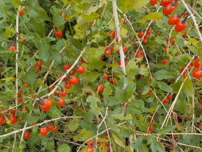
実が多くあるので、何かに使わないともったいないです。
とりあえず収獲しました。乾燥させてドライフルーツにしたいですが、成功するかな？
2023/12/10

実が多くあるので、何かに使わないともったいないです。
とりあえず収獲しました。乾燥させてドライフルーツにしたいですが、成功するかな？
2023/08/14
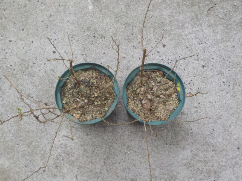
クコを鉢で育てましたが、成長が悪いです。
このまま育てても変わらないと思うので、もう止めることにしました。
2022/12/25
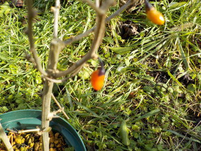
植木鉢のクコには実が2つしかありませんでした。寂しいです。
地植えにすれ大きくなりますが、大きくなると邪魔になるので鉢で育てています。もう1年鉢で育ててみて、株が大きくならなかったら育てるのをやめようと思います。
2022/08/06
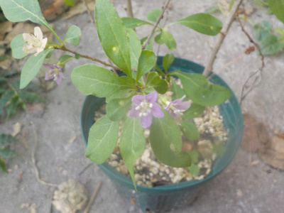
あまり成長していないクコですが、花が少し咲きました。
花が少しなので実も少ししかできませんね。実は食べないで観賞用にしようと思いました。
2022/04/02
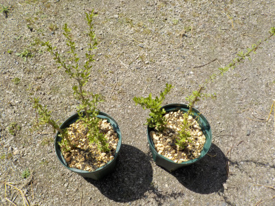
窮屈そうだったので鉢を大きくしました。
これ以上は大きくしないつもりです。クコが茂ると虫が寄って来そうです。
2021/10/23
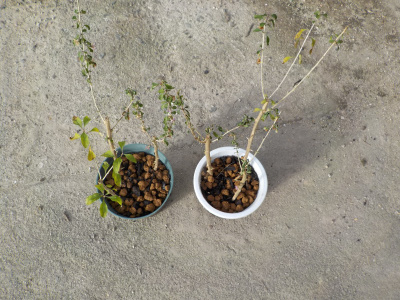
6本挿し木したら6本根っこが出ました。高確率です。
1鉢に3本植えました。
今花が咲いているので、今年実が出来るかもしれません。
2021/07/23
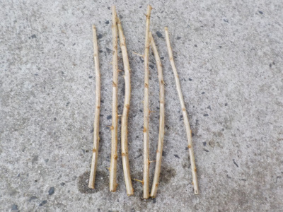
クコの枝を6本挿し木しました。
地植えだと存在を忘れたり、害虫に食べられるケースが多々あったので、鉢植えで育てようと思っています。
2017/11/12
家のあちこちに植えたクコですが、管理していないので大きくなっていません。
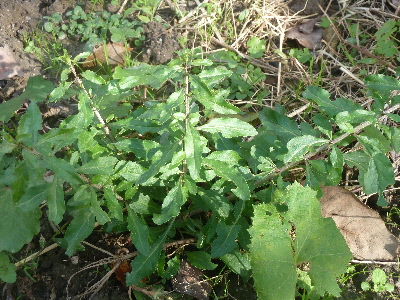
まとめて、並べて植えた方が管理出来てよかったかな。
植え替えるスペースがあったら移したいな。
2016/12/25
ちょっと邪魔だったので、クコの木を抜きました。
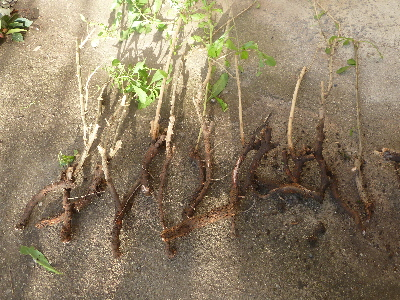
雑に抜いたんですが、少し根っこが付いてます。
時期があまりよくない気がしますが、土に植えたら育つかな？
邪魔にならない隅っこに少し挿して置きました。
来年の冬に実が出来るといいな。
2015/12/06
赤い実が少ししかつきませんでした。
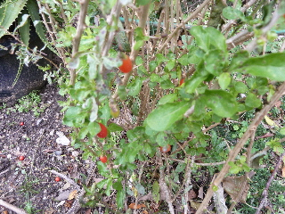
なんでだろうなー。
最近不作が続いてる気がする。
毎年同じ場所だけど、変えた方がいいのかな？
2015/02/22
まだ寒いのに、
もうちょっと暖かくなってからでいい気がするんですが、小さい芽がいっぱい出てます。
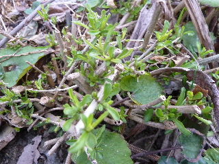
クコは強いですね。
2013/12/01
今年は大量じゃないので、収穫しません。
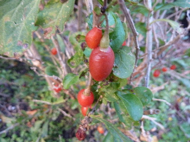
この実が落ちて種になれば、来年は豊作かな？
種をあちこちに蒔こうかな？
2013/09/10
今年は花が少な目かな？
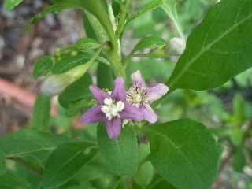
小さいけど綺麗です。
2012/12/18
収獲してすぐにクコ酒にしちゃえば良かったんですけど、面倒で放置していました。
程よく乾燥していいかも？なんて思っていたんですけど、期待どうりにはいきませんでした。
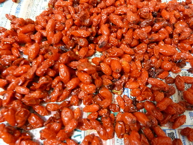
ちょっとグジュグジュで、発酵したかもしれません。
冷蔵庫で乾燥させればよかったんですが、量が多かったので温かい部屋に置いていました。
当然の結果かもしれません。
クコが無駄になってしまってもったいないです。
次は失敗しないようにしたいです。
2012/12/08
クコの実が熟れて、地面に落ちだしました。
なんにもしないで捨てちゃうのはもったいないので、収穫しました。
時期的に寒くて、少し辛かったです。
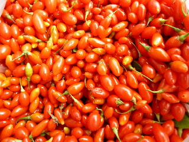
2株で沢山収穫できました。豊作です。
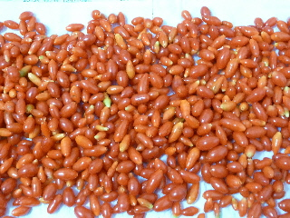
水洗いして、乾燥させます。
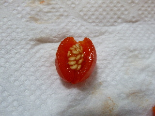
水洗い中に水分を吸って割れちゃいました。
水に付け置かないで、早く洗った方が良さそうですね。
乾燥後にどう使うかは只今検討中です。
クコ酒が最有力かな。
2012/10/27
まだ青い実があるのでもうちょっとですね。

どうやって食べるとおいしいかな？
なかなか使い方を思いつかないんですよね。
2012/09/08
綺麗な花ですね。
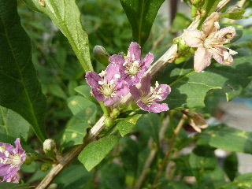
葉っぱは虫がいっぱいであんまり好きじゃないんですが、花が咲くといいですね。
畑仕事じゃないよ。